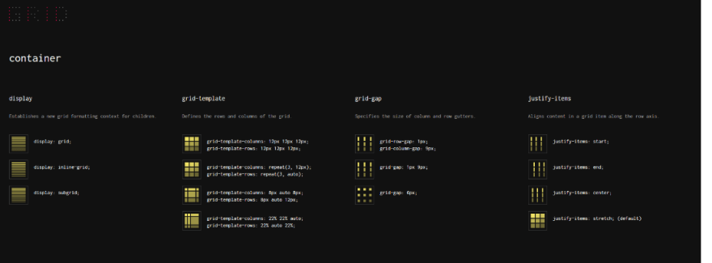
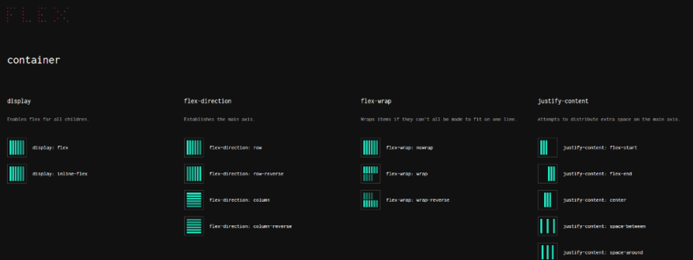
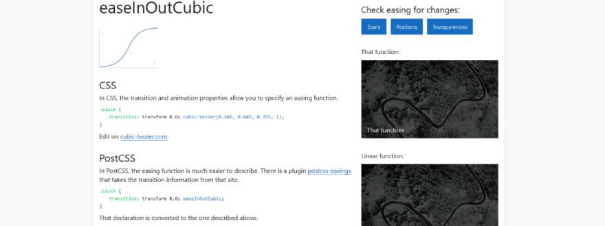
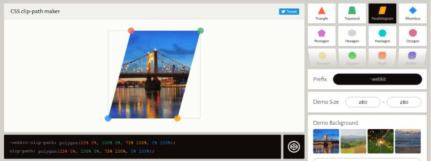

5 Front-end cheat-sheets and bookmarks mà bạn nên biết
Trước hết, hãy để cho bạn biết các ý tưởng của tôi trong thời điểm hiện tại.
Tôi là một có một sự tin tưởng vững chắc rằng, cho dù bạn có kinh nghiệm hay tiến bộ đến đâu, thỉnh thoảng bạn cũng nên dành chút thời gian để xem lại các nguyên tắc cơ bản của những dự án bạn đã làm. Đừng nghĩ về nó như bạn lùi một bước, hãy tưởng tưởng rằng như việc củng cố thêm nền móng, để làm cho ngôi nhà được xây dựng lên vững chắc hơn. Bạn có xu hướng tìm kiếm những hiểu biết mới mẻ mỗi khi bạn bắt tay vào làm.
Vì vậy, mặc dù những bài đăng nhắm vào người mới bắt đầu( kể từ khi toou cũng coi mình là người mới bắt đầu), có thể có một vài người đi trước sẽ thấy một trong số chúng hữu ích hơn.
Hãy bắt đầu ngay bây giờ. Đây là cheat-sheets and bookmarks yêu thích của tôi. Tôi nghĩ nó ở trong tầm tay của mình mỗi khi làm việc.
CSS Grid cheat-sheet
Đây là các tài liệu và hướng dẫn về Grid, nhưng chỉ có một số là tài liệu yêu thích của tôi cho đến hiện nay. Nó sẽ là một cheat- sheet trực quan tuyệt vời với tất cả các cài đặt được minh họa và hiển thị trên một trang đơn để bạn có thể truy cập ( và tìm hiểu) chúng chỉ với một cái liếc mắt đó là những gì một cheat-sheat có thể giúp các lập trình viên tiết kiệm thời gian.
CSS Flex cheat - sheet
Tương tự với Grid, nó là cheat-sheet flex.
Easing functions
Css clip-path maker
Thuộc tính sẽ cho phép bạn tạo và xem trước các đường dẫn clib chỉ bằng vài cú nhấp chuột ! Thật dễ dàng và trực quan.
Đây có lẽ tài nguồn tài nguyên về css tốt nhất mà tôi thấy từ trước đến nay. Nếu bạn có nguồn tài nguyên nào hay và muốn chia sẻ hãy liên hệ với chúng tôi nhé.
Bài viết tham khảo : https://dev.to/vladimir_dev/my-5-favorite-front-end-cheat-sheets-and-bookmarks-4nj4